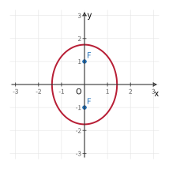
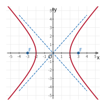
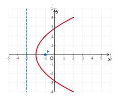
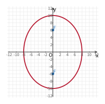
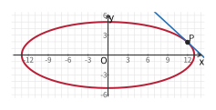

別冊章末問題の解答
1. 楕円 \(3x^2+2y^2=6\) の焦点の座標と、長軸・短軸の長さを求めよ。
標準形に直す
両辺を \(6\) でわる。
\[\dfrac{x^2}{2}+\dfrac{y^2}{3}=1\]長軸の向きと \(a,\ b\)
分母の大きい方が長軸。\(y\) 軸方向が長軸。
\[a^2=3,\ b^2=2\ \Rightarrow\ a=\sqrt{3},\ b=\sqrt{2}\]焦点
\[c=\sqrt{a^2-b^2}=\sqrt{3-2}=1\]\[F\,(0,\ 1),\quad F'\,(0,\ -1)\]長軸・短軸の長さ
\[\text{長軸 }2a=2 \sqrt{3},\qquad \text{短軸 }2b=2 \sqrt{2}\]
（例題1の型）
【答案】
\[\text{焦点 }(0,\ 1),\ (0,\ -1);\ \text{長軸 }2 \sqrt{3},\ \text{短軸 }2 \sqrt{2}\]答
2. 双曲線 \(5 x^{2} - 4 y^{2}=20\) の焦点の座標と漸近線の方程式を求めよ。
標準形に直す
両辺を \(20\) でわる。
\[\dfrac{x^2}{4}-\dfrac{y^2}{5}=1\]\(a,\ b\) と焦点
\(x^2\) が正の項なので焦点は \(x\) 軸上。
\[a^2=4,\ b^2=5,\quad c=\sqrt{a^2+b^2}=\sqrt{9}=3\]\[F\,(3,\ 0),\quad F'\,(-3,\ 0)\]漸近線
右辺の \(1\) を \(0\) にして因数分解する。
\[y=\pm\dfrac{\sqrt{5}}{2}\,x\]
（例題2の型）
【答案】
\[\text{焦点 }(3,\ 0),\ (-3,\ 0);\ \text{漸近線 }y=\pm\dfrac{\sqrt{5}}{2}\,x\]答
3. 点 \(F(-1,\ 0)\) からの距離と、直線 \(x=-3\) からの距離が等しい点 \(P\) の軌跡の方程式を求めよ。
条件を式にする
動点 \(P(x,y)\) について、焦点 \(F\) までの距離 \(=\) 準線までの距離。
\[\sqrt{(x-\left(-1\right))^2+(y-\left(0\right))^2}=|x-\left(-3\right)|\]両辺を2乗する
\[(x-\left(-1\right))^2+(y-\left(0\right))^2=(x + 3)^2\]整理する
共通の2乗の項が消える。
\[(y-\left(0\right))^2=4(x-\left(-2\right))\]頂点 \((-2,\ 0)\)、\(p=1\)。

（例題3の型）
【答案】
\[(y-\left(0\right))^2=4(x-\left(-2\right))\]答
4. 2点 \(F(0,\ 6),\ F'(0,\ -6)\) からの距離の和が \(20\) である点 \(P\) の軌跡の方程式を求めよ。
楕円の定義から \(a\)
2定点 \(F,F'\) からの距離の和が一定 \(2a\) の点の軌跡が楕円。
\[2a=20\ \Rightarrow\ a=10\]\(b\) を求める
焦点が \((0,\ \pm6)\)。\(c=6\) とおくと
\[b^2=a^2-c^2=100-36=64\]方程式
\[\dfrac{x^2}{64}+\dfrac{y^2}{100}=1\]
（例題4の型）
【答案】
\[\dfrac{x^2}{64}+\dfrac{y^2}{100}=1\]答
5. 楕円 \(\dfrac{x^2}{169}+\dfrac{y^2}{25}=1\) 上の点 \(P(12,\ \dfrac{25}{13})\) における接線の方程式を求めよ。
接線の公式
楕円 \(\dfrac{x^2}{a^2}+\dfrac{y^2}{b^2}=1\) 上の点 \((x_0,y_0)\) での接線は
\[\dfrac{x_0x}{a^2}+\dfrac{y_0y}{b^2}=1\]代入する
\[\dfrac{\left(12\right)\cdot x}{169}+\dfrac{\left(\dfrac{25}{13}\right)\cdot y}{25}=1\]\[\dfrac{12 x}{169} + \dfrac{y}{13}=1\]整理する
分母をはらう（両辺に \(169\) をかける）。
\[12 x + 13 y=169\]\[y=- \dfrac{12 x}{13} + 13\]
（例題5の型）
【答案】
\[12 x + 13 y=169\]答